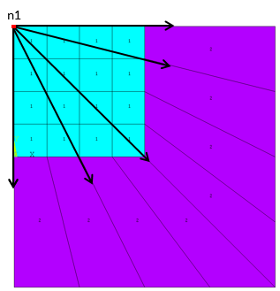
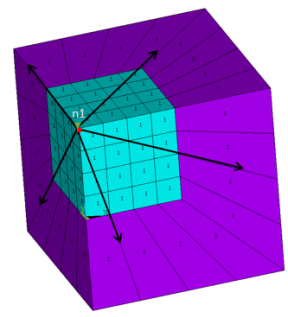
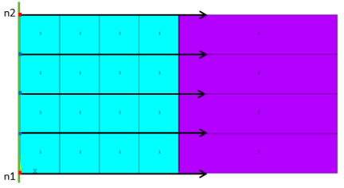
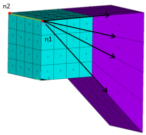
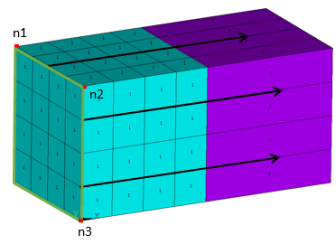
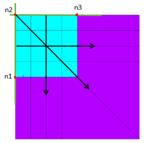
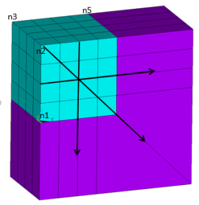

EINFIN,
CompName, PNODE(NREF1),
NREF2, NREF3,
MATID
Generates structural infinite elements from selected nodes.
CompNameComponent name containing the reference nodes for calculating the position of poles for generating INFIN257 structural infinite elements.
The number of poles and their positions are based on the number of included nodes:
If the component includes only one node, the node becomes the pole node. The pole node is typically located at or near the geometric center of the finite element domain if there is a single pole.
If the component includes two (2-D) or three nodes (3-D), the program constructs an infinite line or area, then calculates the pole positions by drawing a perpendicular line from a selected node to the line or area.
If the component includes more than two (2-D) or three nodes (3-D), the program uses the first two or three nodes calculate the position of poles.
PNODE or NREF1Node number for the direct input of the pole node. (A parameter or parametric expression
is also valid.) Specify this value when no CompName has been
specified. (If CompName is specified, this value is ignored.)
If NREF2, or NREF2 and
NREF3, are defined, this value becomes the first reference node
(NREF1) used to calculate pole positions.
NREF2Node number of the second reference node used to calculate pole positions. (A parameter
or parametric expression is also valid.) Specify this value when no
CompName has been specified. (If
CompName is specified, this value is ignored.) To input this
value, first specify NREF1 (replacing
PNODE). Pole positions are calculated on an infinite line defined
by NREF1 and NREF2.
NREF3Node number of the third reference node used to calculate pole positions. (A parameter or
parametric expression is also valid.) Specify this value when no
CompName has been specified. (If
CompName is specified, this value is ignored.) To input this
value, first specify NREF1 (replacing
PNODE) and NREF2. Pole positions are
calculated on an infinite line defined by NREF1,
NREF2, and NREF3.
MATIDOptional material ID of the structural infinite element. (A parameter or parametric expression is also valid.) If specified, this value defines the material properties of the structural infinite elements explicitly; otherwise, the material ID is copied from the base elements.
The EINFIN command generates structural infinite elements (INFIN257) directly from the selected face of valid base elements (existing standard elements in your model). The command scans all base elements for the selected nodes and generates a compatible infinite element type for each base element. A combination of different base element types is allowed if the types are all compatible with the infinite elements.
The infinite element type requires no predefinition (ET).
The faces of base elements are determined from the selected node set (NSEL), and the geometry of the infinite element is determined based on the shape of the face. Element characteristics and options are determined according to the base element. For the face to be used, all nodes on the face of a base element must be selected
Use base elements to model the near-field domain that interacts with the solid structures or applied loads. To apply the truncated far-field effect, a single layer of infinite elements must be attached to the near-field domain. The outer surface of the near-field domain must be convex.
The material of the structural infinite elements can be defined in
either of two ways. If MATID is specified, the command uses that value
to define the material property of the structural infinite elements. If
MATID is not specified, the
material ID of the base element is copied to the attached infinite element. Although only
isotropic material is allowed for the infinite elements, these options enable you to define
anisotropic material for the base elements in a static analysis. (In a transient analysis,
however, use the same isotropic material for both base elements and infinite elements.)
After the EINFIN command executes, you can verify the newly created infinite element types and elements (ETLIST, ELIST, EPLOT).
Infinite elements do not account for any subsequent modifications made to the base elements. It is good practice to issue the EINFIN command only after the base elements are finalized. If you delete or modify base elements (via EDELE, EMODIF, ETCHG, EMID, EORIENT, NUMMRG, or NUMCMP commands, for example) after generating the structural infinite elements, remove all affected infinite elements and reissue the EINFIN command; doing so prevents inconsistencies.
2-D Elements:
/prep7 et,1,182 mp,ex,1,1e9 mp,nuxy,1,0.3 type,1 ! Generate solid elements mat,1 rect,0,4,0,4 elsize,1 allsel mshkey,1 amesh,1 n1 = node(0,4,0) ! Select reference node nsel,s,loc,x,4 ! Select nodes on base element nsel,a,loc,y,0 EINFIN, ,n1

3-D Elements:
/prep7 et,1,185 ! Generate solid elements mp,ex,1,1e9 mp,nuxy,1,0.3 type,1 mat,1 block,0,4,0,4,0,4 elsize,1 mshkey,1 vmesh,1 n1 = node(0,0,4) ! Select reference node nsel,,loc,x,4 ! Select nodes on base elements nsel,a,loc,y,4 nsel,a,loc,z,0 EINFIN, ,n1

2-D Elements:
/prep7 et,1,182 ! Generate solid elements mp,ex,1,1e9 mp,nuxy,1,0.3 type,1 mat,1 rect,0,4,0,4 elsize,1 allsel mshkey,1 amesh,1 n1 = node(0,0,0) ! Select reference nodes n2 = node(0,1,0) nsel,,loc,x,4 ! Select nodes on base elements EINFIN, ,n1,n2
Following is the equivalent input with a component:
/prep7 et,1,182 ! Generate solid elements mp,ex,1,1e9 mp,nuxy,1,0.3 type,1 mat,1 rect,0,4,0,4 elsize,1 allsel mshkey,1 amesh,1 n1 = node(0,0,0) ! Select reference nodes n2 = node(0,1,0) nsel,,node,,n1 nsel,a,node,,n2 cm, nrefs, node ! Define component allsel nsel,,loc,x,4 ! Select nodes on base elements EINFIN, nrefs

3-D Elements:
prep7 et,1,185 ! Generate solid elements mp,ex,1,1e9 mp,nuxy,1,0.3 type,1 mat,1 block,0,4,0,4,0,4 elsize,1 mshkey,1 vmesh,1 n1 = node(0,1,4) ! Select reference nodes n2 = node(0,0,4) nsel,,loc,x,4 ! Select nodes on base elements EINFIN, ,n1, n2

3-D Elements Only:
/prep7 et,1,185 ! Generate solid elements mp,ex,1,1e9 mp,nuxy,1,0.3 type,1 mat,1 block,0,4,0,4,0,4 elsize,1 mshkey,1 vmesh,1 n1 = node(0,4,4) ! Select reference nodes n2 = node(0,0,4) n3 = node(0,0,0) nsel,,loc,x,4 ! Select nodes on base elements EINFIN, ,n1,n2,n3

2-D Elements:
/prep7 et,1,182 mp,ex,1,1e9 mp,nuxy,1,0.3 type,1 ! Generate solid elements mat,1 rect,0,4,0,4 elsize,1 allsel mshkey,1 amesh,1 n1 = node(0,0,0) n2 = node(0,4,0) nsel,,loc,x,4, nsel,r,loc,y,0.5,5 EINFIN,,n1,n2 ! upper right quad. elements nsel,all nsel,,loc,x,4 nsel,r,loc,y,0,1.5 EINFIN,,n2 ! Lower corner element nsel,all n3 = node(4,4,0) nsel,s,loc,y,0 EINFIN,,n2,n3 ! Lower elements (y<0)

3-D Elements:
/prep7 et,1,185 ! Generate solid elements mp,ex,1,1e9 mp,nuxy,1,0.3 type,1 mat,1 block,0,4,0,4,0,4 elsize,1 mshkey,1 vmesh,1 n1 = node(0,0,0) n2 = node(0,0,4) n3 = node(0,4,4) nsel,s,loc,x,4, nsel,u,loc,z,0 EINFIN, , n1, n2, n3 ! Upper right part allsel nsel,s,loc,x,4 nsel,r,loc,z,-0.1,1.2 EINFIN,,n2,n3 ! Corner element allsel n5 = node(4,4,4) nsel,s,loc,z,0 EINFIN,,n2,n3,n5 ! Lower part (z<0)
